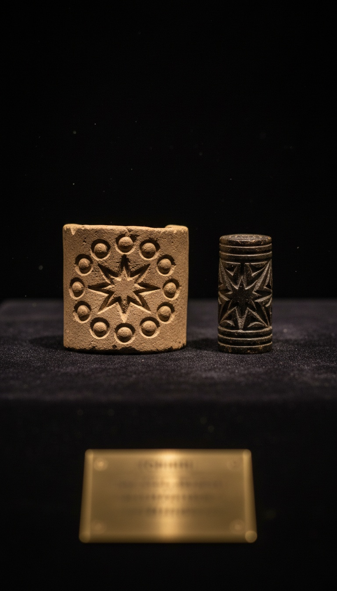

A clay cylinder carved around 2300 BCE, currently locked behind glass in Berlin, shows our Sun surrounded by eleven orbital bodies. NASA announced the hunt for an eleventh body in 2016. The Sumerians beat them by roughly 4,300 years.
Almost nobody knows this seal exists. Fewer still know its catalog number. The artifact has a name. VA 243. And it is sitting in a public museum right now.

The Seal in Berlin Nobody Talks About
The artifact is cataloged as VA 243 at the Vorderasiatisches Museum in Berlin. It is a small Akkadian cylinder seal dated to roughly 2300 BCE. The carving shows a central star symbol ringed by eleven smaller spheres.
Zecharia Sitchin examined the seal and published his interpretation in his 1976 book The 12th Planet. He counted the spheres. He matched them against the known planets. He found one extra.
Sitchin called the extra body Nibiru, borrowing the Sumerian term meaning the planet of the crossing. Mainstream Assyriologists disputed his reading immediately, arguing the spheres represent divine attendants in a standard Mesopotamian motif. The seal itself does not change. Eleven bodies. One Sun. Carved 4,300 years ago.
The Pluto Problem Nobody Wants to Explain
Clyde Tombaugh discovered Pluto at the Lowell Observatory in Flagstaff, Arizona on February 18, 1930. That discovery required a 13-inch astrograph and photographic plate comparison technology that did not exist before the 20th century.
If the spheres on VA 243 represent planets in the order Sitchin proposed, the seal accounts for Pluto roughly 4,200 years before Tombaugh found it. Bronze Age Mesopotamians had no telescopes. They had reed styluses and wet clay.
The orthodox response is that the count is coincidence. The seal exists. The math exists. The coincidence is doing heavy lifting.
What Sumerian Astronomy Actually Did
The Enuma Anu Enlil is a 700-tablet astronomical compendium compiled in Mesopotamia. It catalogs celestial omens, eclipse cycles, and planetary movements with a level of detail that took European astronomy until the Renaissance to match.
Sumerian and Babylonian astronomers tracked Venus to within roughly one hour of accuracy across a 484-year observational cycle. The Venus Tablet of Ammisaduqa, currently held in the British Museum as part of the K.160 collection, records 21 years of Venus observations from the reign of a king who ruled around 1646 to 1626 BCE.
These were not shepherds guessing at lights. These were institutional astronomers with multi-generational data sets. The Enuma Elish, Tablet VII, dated to around 1750 BCE, names Marduk as the supreme celestial body and ties him to a planetary identity. The tradition is documented. The tablets are cataloged. The receipts stack.
NASA is still searching for the eleventh body. A scribe in Akkad carved it into clay before the pyramids at Giza were finished being polished.
The 2016 Caltech Announcement
On January 20, 2016, Caltech astronomers Konstantin Batygin and Michael Brown published a paper in The Astronomical Journal proposing a massive ninth planet to explain anomalous clustering of orbits in the Kuiper Belt. They estimated it at roughly ten Earth masses, orbiting roughly 20 times farther from the Sun than Neptune.
A follow-up paper later in 2016 from the same Caltech team argued that Planet Nine could explain the six-degree tilt of the Sun's rotational axis relative to the planetary plane. That tilt has puzzled astronomers since it was first measured.
The Vera C. Rubin Observatory in Chile is expected to begin survey operations capable of finding Planet Nine directly. As of this writing, the planet has not been visually confirmed. The math says it is there. The seal in Berlin said it was there in 2300 BCE.
The Anunnaki Origin Problem
Sumerian tablets repeatedly describe the Anunnaki as gods who descended from the heavens. The term itself breaks down as those who from heaven came. The narrative is not subtle.
Sitchin read the Anunnaki origin texts as a literal account of a populated world on the eleventh body, the one carved into VA 243. Mainstream scholars read the same texts as myth. Both readings have to account for the same source material.
The Atra-Hasis epic, preserved on tablets in the British Museum and dated to around 1700 BCE, describes the Anunnaki arriving, laboring, and eventually creating workers from clay. The text predates Genesis by roughly a thousand years and contains a flood account that matches Noah's narrative in structural detail. Someone was telling this story first. Someone had a source.
The Pattern Across the Tablets
The Mul.Apin tablets, dated to around 1000 BCE and now split between the British Museum and the Vorderasiatisches Museum, list constellations, rising and setting dates, and a calendar of celestial events that aligns with observable sky data. The accuracy is verifiable today.
The Sumerian King List, with copies in the Ashmolean Museum at Oxford under catalog WB 444, records pre-flood kings with reigns of tens of thousands of years. Orthodox historians treat the numbers as symbolic. The list itself treats them as ledger entries.
Three artifacts. Three museums. Three independent records all describing a sky-derived civilization that knew more about the solar system than it should have known. The VA 243 seal is the visual receipt. The Enuma Anu Enlil is the data set. The Atra-Hasis is the origin story.
NASA hypothesized Planet Nine in 2016 based on gravitational anomalies in the Kuiper Belt. The seal in Berlin has been showing the same eleventh body since 2300 BCE. The Rubin Observatory may confirm what a Bronze Age scribe already pressed into clay.
The question is not whether the Sumerians were right. The question is who told them. They had no telescopes. They had no orbital mechanics. They had reed styluses and a sky that gave them eleven bodies and a flood story that matches the Bible by a thousand years.
If VA 243 is just decorative art, the coincidence is mathematical. If it is a star map, the implications break the timeline of human knowledge. Which reading do you believe, and why is the seal still sitting unexplained in a Berlin museum drawer.
Books that informed this investigation
- The Sumerians (Kramer)
- Babylon: Mesopotamia and the Birth of Civilization (Kriwaczek)
- The Ancient Near East (Hallo & Simpson)
As an Amazon Associate, Hidden Epoch earns from qualifying purchases. Cost to you: nothing.
Research safely
The VPN we use to research without being tracked. First 3 months free.
Get NordVPN →